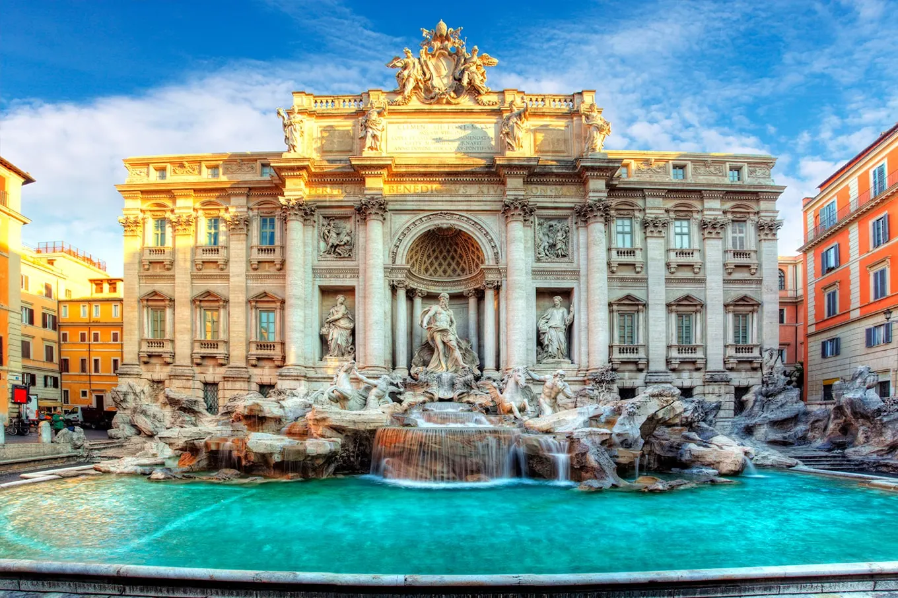
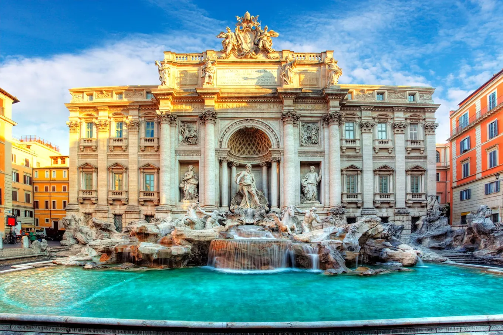

Descrição
A cidade de Roma é, sem dúvida, um dos lugares mais fascinantes do mundo. Seus incríveis monumentos históricos, sua vibrante cultura e sua deliciosa culinária fazem dela uma cidade verdadeiramente única. É por isso que Roma é o meu lugar favorito.
A cidade tem mais de 2000 anos de história, e é o lar de alguns dos monumentos mais famosos e icônicos do mundo, como o Coliseu, o Panteão, a Fontana di Trevi, o Fórum Romano, entre outros. Cada um desses monumentos é um testemunho vivo da grandeza e da importância da antiga civilização romana.
Mas a cidade não é apenas sobre história. Roma é uma cidade cheia de vida e cultura, com muitos museus e galerias de arte, além de eventos culturais e festivais que acontecem durante todo o ano. É um lugar onde você pode encontrar artistas de rua, músicos e dançarinos em quase todas as esquinas.
E não podemos esquecer da comida. A culinária romana é famosa em todo o mundo, e com razão. Desde as pizzas e massas deliciosas, até os sorvetes e cafés, a comida em Roma é uma experiência que você nunca esquecerá. Os restaurantes e bares estão por toda parte, então é fácil encontrar algo para comer a qualquer hora do dia.
Para mim, a cidade de Roma é um lugar verdadeiramente especial. A combinação de sua rica história, cultura vibrante e comida deliciosa a tornam uma cidade única e cativante. É um lugar que eu adoraria visitar novamente e novamente.
Imagens

 

Três principais razões
- A história e cultura da cidade são fascinantes e sempre me surpreendem.
- A comida em Roma é deliciosa e eu adoro experimentar novos pratos.
- A cidade é cheia de lugares maravilhosos para passear e explorar, como o Coliseu e o Vaticano.
Links úteis
Endereço: Colosseo, Roma, Itália